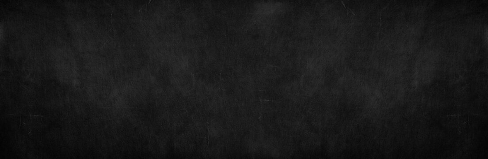

| Mijn top 10 favoriete dingen |
Waarom |
| Gamen |
Ik game al bijna me hele leven, ik vind het heel leuk |
| Voetballen |
Ik vind voetballen best leuk maar ik zelf geen voetbal eigenlijk! |
| Tekenen |
Ik teken soms, meestal teken ik voor mensen en krijg ik er betaald voor |
| Chillen met vrienden |
Ik ga soms lekker chillen met vrienden in de buurt,
het is heel leuk om gewoon naar de winkel te gaan en te praten. |
| Muziek luisteren |
Ik luister bijna elk uur muziek
Ik luister naar van alles en vind alles wel leuk.
|
| Lekker eten |
Wie houd er niet ervan om te eten. Behalve als je annorexia heb. |
| Fietsen |
Soms in het weekend of in de vakantie fiets ik alleen
naar verre plekken in de ochtend |
| Zwemmen |
Vroeger zwemde ik een hele boel, nu wel wat minder maar het is nogsteeds leuk om te doen. |
| uitgaan |
Beetje hetzelfde als chillen, maar dan meer in de stad enzo |
